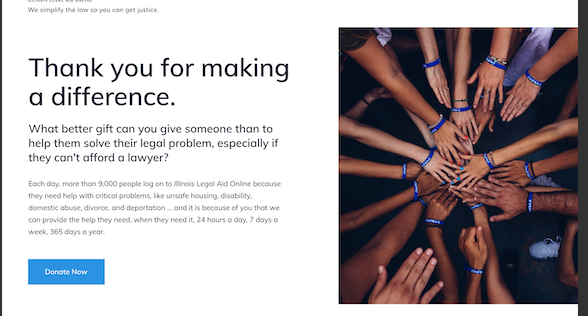
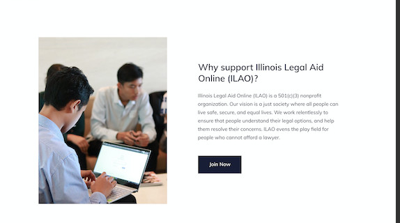
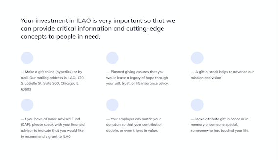
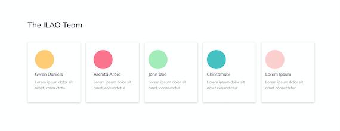

Basic pages
Purpose
Basic pages are used in the About section and for ancillary pages (such as Terms of Use, Privacy Policy, Contact us). These pages are not included in legal resources sections of the website such as category and subcategory pages, the form library, or the blog.
Elements to be removed
While we moved over the existing data and fields, those should not be used going forward as we will deprecate them:
Body
Include video or image
Page image
Iframe
Todo
remove deprecated fields from basic page content type (body, page image, include video, iframe field)
Basic page layouts
There are 5 supported component layouts that can be mixed and matched on a basic page. They are:
Portal layout side-by-side
6 column grid
Media & Text
Portal layout grid
Portal layout split column
Portal layout side-by-side
The portal layout side-by-side renders an image plus headline and text. Fields are:
Heading (optional)
Body (required)
Media (required); only images are supported.
Image location (required) (left or right; whether to render the image to the left (top) or right (bottom) of the text
Optionally, whether to pin the image to the edge of the window. When this is set, the image will attach to the left/right wall on desktop rather than float with indentation.
Examples
The image above shows a side by side where the image is to the right of the text and pinned to the right side of the page.
A side-by-side with a heading, text, and image. The image is placed on the left and not pinned to the side. The pale yellow is for illustration only.
6 column grid
The 6 column grid allows us to build more interesting layouts for lists of items.
Contains:
A headline (up to 255 characters)
Up to 6 grid items. Each item has:
An icon
A body
On mobile, the grid will render 1 item across.
Example
Media & Text
This bundle replaces the existing body and video/image field.
It requires:
A media item (image, video, or remote video)
A body of text
The image or video will appear above the body in both mobile and desktop.
Portal layout grid
This repurposes the grid created for survivor stories in the Victims of Crime portal. It has fields for:
Grid title (required)
Portal grid items. Each item requires:
Title
Image
Quote
Summary. This is a legacy required field but the summary will not actually display.
Link url and text. The text will not display.
The grid item is fully clickable in the new design.
Example
Other examples can be found in our portal content.
Portal layout split column
This is just two columns side-by-side (stacked on mobile).
The portal split-column layout has:
Portal icon (required, but not supported at this time)
Title, required
Body (Summary), required
Optional button
Then add a second portal text to add the second column. On mobile, the columns will stack.